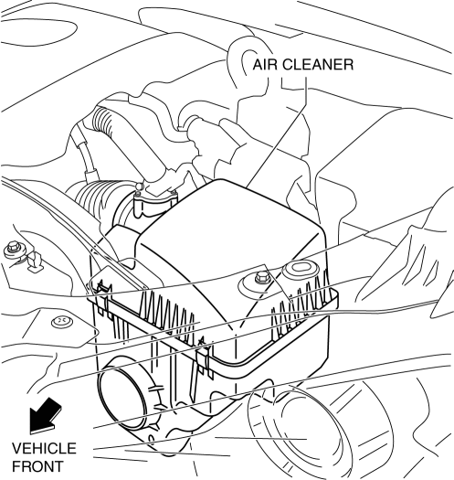
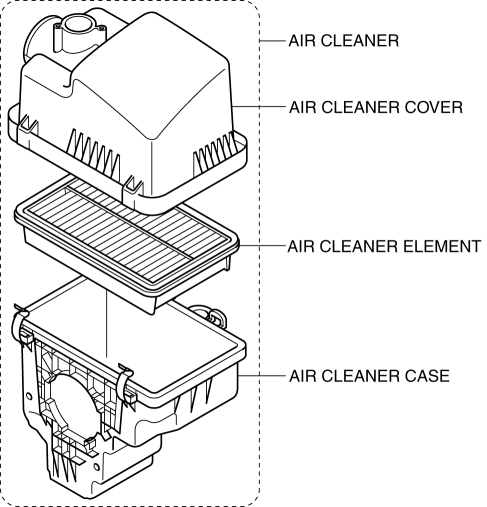
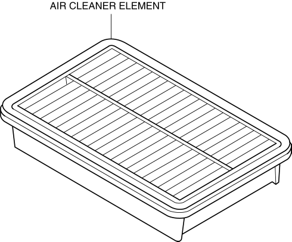

< Previous
Next >
2014 -
Mazda6 -
Engine
AIR CLEANER [SKYACTIV-G 2.5]
Purpose, Function
Construction
-
The air cleaner is installed in front of the battery.

-
The air cleaner consists of the air cleaner case, air cleaner cover, and air cleaner element.

-
Non-woven fabric (dry type) air cleaner element has been adopted to remove dust and foreign material in the intake air.

< Previous
Next >
© 2012 Mazda North American Operations, U.S.A.